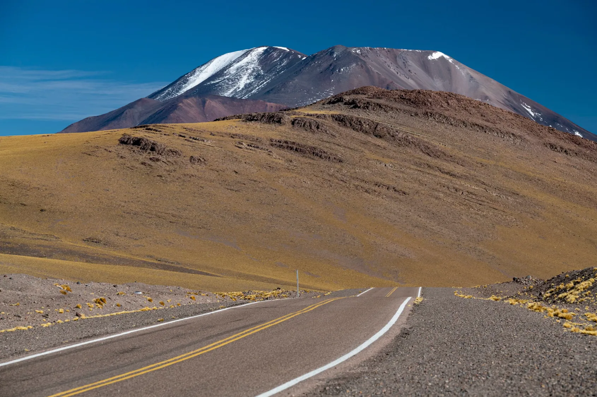
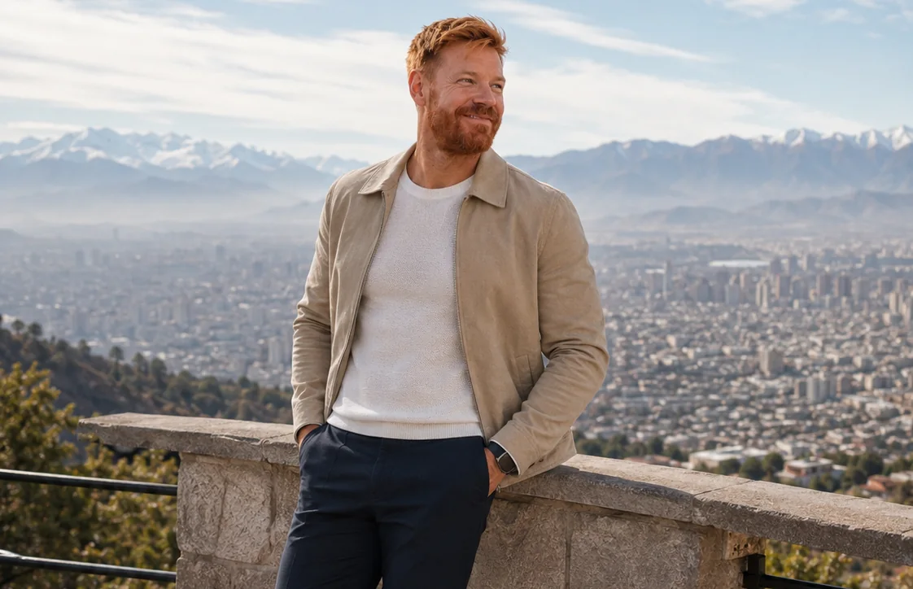
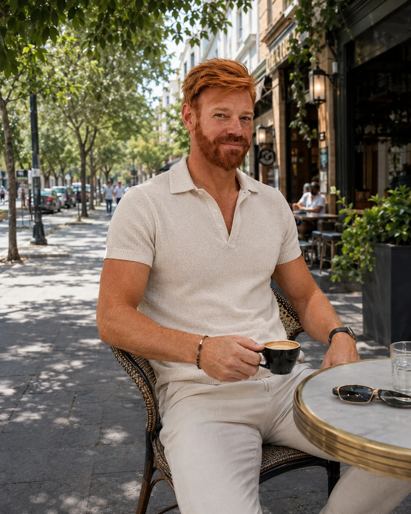
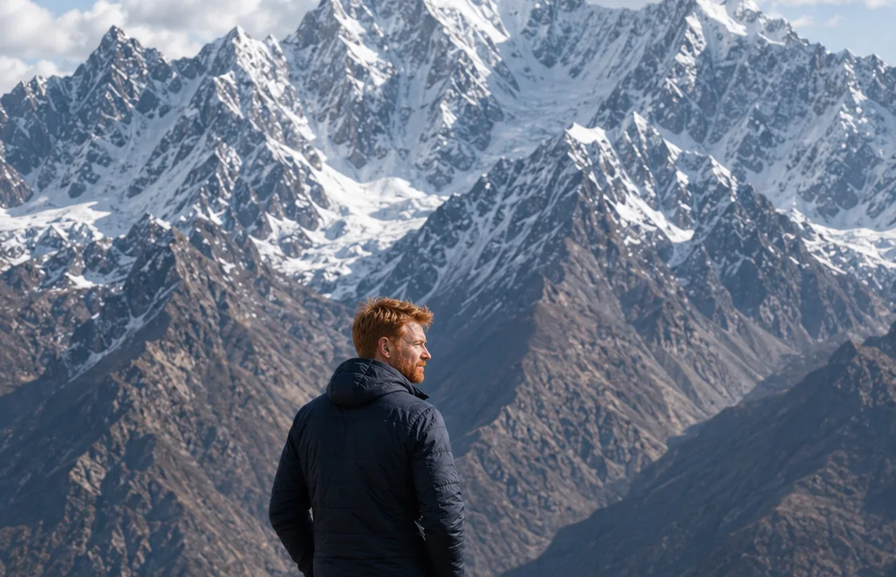

CHILE
Atacama
Deserto, altitude e paisagem mineral — em um episódio que também atravessa Uyuni.
Santiago, Atacama e Cordilheira pedem ritmos e logísticas muito diferentes. Santiago funciona como base urbana; o Atacama muda a escala com deserto e altitude; e a Cordilheira define clima, distâncias e leitura da paisagem.


Base urbana, mirantes e a Cordilheira sempre no enquadramento.

A geografia que muda clima, roupa, distâncias e leitura da viagem.

Deserto, altitude e paisagem mineral — em um episódio que também atravessa Uyuni.
Deserto, altitude e paisagem mineral — em um episódio que também atravessa Uyuni.